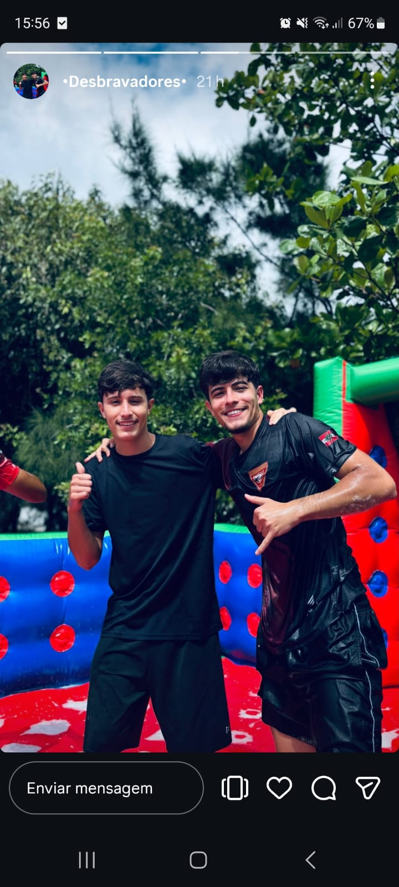

Essa imagem representa um momento do meu final de semana.

No meu final de semana eu aproveitei para descansar e tirar uma foto para registrar o momento. Foi um momento simples, mas especial, que representa bem como foi meu descanso.